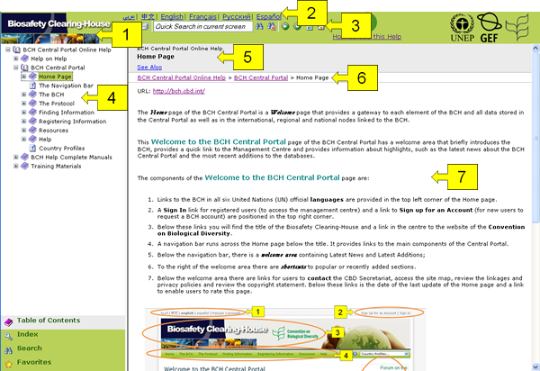
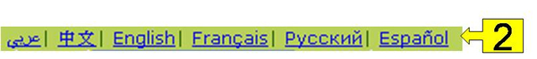
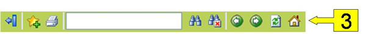
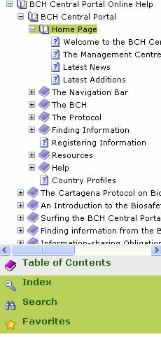
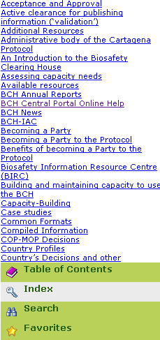
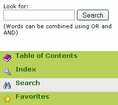
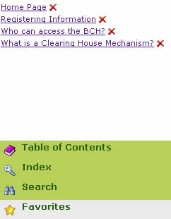

This Online Help System was designed to provide help on the usage of the BCH Central Portal. The help topics are available for reading online and also for download in the form of Training Modules (https://bch.cbd.int/help/topics/en/webframe.html?Training_Modules.html).
The information managed in the Online Help System is divided into minimum parts called help topics. This is a Context-Sensitive help system, which means that BCH pages are linked to help topics so that when the BCH user needs help on BCH pages, he or she is directed to a relevant help topic according to the context (web page) in which he or she was navigating in the BCH. To access the context-sensitive help of a web page click on the question mark  located at the top right-hand side of the screen.
located at the top right-hand side of the screen.
The recommended screen setting for this Help System is 1024x768 pixels or higher. This Help System has been tested and supports internet browsers Mozilla Firefox and Internet Explorer.
In the picture below it is shown the main page of the Online Help System.

Figure 1
The components depicted in the figure are as following:
-
BCH Logo: clicking on this logo points the browser to the BCH Central Portal home page.
-
Language bar: this bar provides links to access the Online Help System in each of the six official UN languages.

Figure 2
-
Navigation bar:

Figure 3
-
Hide Navigation: by clicking on this icon the user can choose the navigation area (described in point 3) to be visible or not. If it is currently visible, one click on the icon will make it disappear. Another click will make it visible again.
-
Add to Favorites: through this link the user can add topics to the list of favorite topics. Links to these topics will appear in the Favorites section of the navigation area. This feature is very useful to manage in one place those topics which the user reads most frequently, without the need to look them up in the table of contents, the index or the search section. You must take into account that, in order to remember the topics that you have selected as favorites, you must have the cookies enabled.
-
Print topic: click on this icon to print the topic displayed in the information pane.
-
Quick Search: to search for parts of words or whole words in the topic shown in the information pane, you may enter the text in the text area and then click on the search icon. The text you searched for will appear highlighted every time it is found in the topic title, the path and the information pane.
-
Clear Search: by clicking on this icon you can clear the highlights placed on the text by a previous use of the Quick Search feature. Notice that the text that you entered in the text area will remain there, in case you want to redo the search.
-
Back/Forward: while you are navigating through the topics, the Online Help System will remember the order in which you visited them and allow you to move back and forward through the pages. This way you can easily access the topics you are working with, without having to look for them again in the table of contents, the index or the search section.
-
Refresh: by clicking on this icon the user can refresh the topic as if you entered the page for the first time. Please notice that if a search had been made, the highlighted text will be cleared.
-
Home: this icon changes the current page to the home page, corresponding to the “BCH Central Portal Online Help” topic which is the first entry in the table of contents.
-
-
Navigation area: the navigation area provides different ways of accessing the topics contained in the Online Help System. The way in which topics are looked for depends on the selected section. The possible sections are:
-
Table of Contents: by selecting the table of contents, the help topics will be shown in the navigation area hierarchically arranged. The user can navigate through the topic hierarchy as wanted; this way the navigation turns very intuitive as the user looks into organized information. Clicking on a topic will load the topic’s content in the information pane and display its subtopics, if any, in the table of contents. The topic which content is currently displayed in the information pane appears highlighted in green in the table of contents. Note that some entries in the table of contents are not linked to topics, but simply intended to organize other topics in the hierarchy. Clicking those entries will display the subtopics under that entry but will not show any content in the information pane nor will it change the green highlight.

Figure 4
-
Index: when the index section is selected, appears a list with every topic contained in the Online Help System is displayed in the navigation area, ordered alphabetically. The user can then open the contents of a topic by clicking on the index entry that corresponds to the topic’s name. This navigation option is very useful if you are looking for a topic whose name you already know. Otherwise, it is recommended to navigate the topics through the table of contents.

Figure 5
-
Search: with this feature the user can search in the topics’ content for keywords. It is possible to use one keyword or combination of keywords linked by OR or AND connectors. Once the user has entered the keywords and clicked on the Search button, a list of the topics which contain that combination of words will appear in the navigation area. For example, Searching for “organism OR gene” will display all topics found containing at least one of the two words, while searching for “organism AND gene” will display all topics found containing both words.

Figure 6
-
Favorites: the Online Help System offers the user the possibility of maintaining a list of favorite topics. Direct links to those topics will be kept in the navigation area when you select the Favorites section. Please take into account that for remembering and seeing the favorite links you have selected in a previous session you need to have the cookies enabled. Moreover, next to each of the links to favorite topics you will see a red cross. By clicking on that cross you can remove the corresponding link from the list.

Figure 7
-
-
Title bar: in this bar the user will see, first of all, the main title of the Online Help System (BCH Central Portal Online Help). The second line displays the name of the topic currently shown in the information pane. If the topic contains links to other topics in its “see also” section, a third line is shown providing a link to that section of the topic.
-
Path: this bar shows the current position in the global hierarchy of the Online Help System, composed by the path in the table of contents to reach the current topic. Besides, a link to each of the intermediate entries is provided.
-
Information pane: in this pane it is shown the content of the topic currently selected. At the bottom it may include a list of see also links for further reading on related topics.